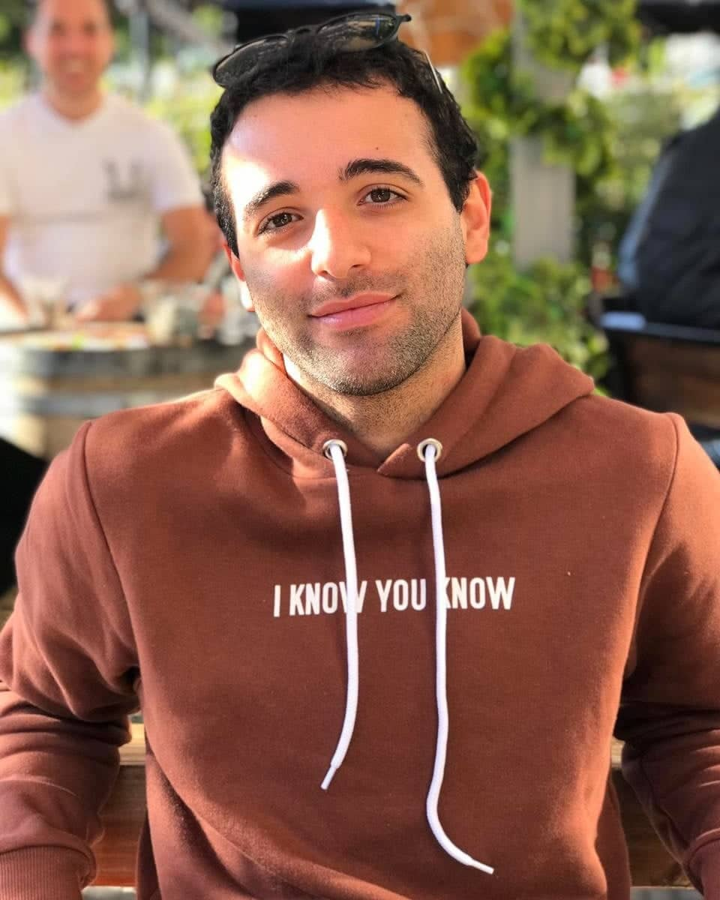

¡Hola! Mi nombre es Federico Damián Albornoz, tengo 29 años y me encuentro en la búsqueda del progreso. Soy profesor de inglés recibido en el año 2016, pero empecé a ejercer la profesión en 2015. Comencé trabajando en escuelas primarias, con niños de entre 8 y 12 años, y a medida que avanzaba en la carrera, fui metiéndome en el mundo de la escuela secundaria. Trabajo con diversos grupos de niños y adolescentes, lo que me permite conocer mundos diferentes de personas, teniendo que así adaptarme a diferentes grupos y enfrentándome a los desafíos que esto conlleva. Me preparo para tener la capacidad de transmitir conocimientos con un amplio dinamismo y una amplia habilidad para el trabajo en equipo y, a su vez, sociabilizar con personas de distintas edades y niveles. Mi objetivo consiste en dar clases que sean dinámicas y amenas para que el alumno utilice la segunda lengua en la seguridad y conformidad del aula y, a la vez, pueda aplicar los conocimientos adquiridos en la vida cotidiana y laboral si así lo necesitase.
En 2022, decidí empezar a darle otro rumbo a mi vida laboral, por lo que decidí comenzar a estudiar Desarrollo Web en Coderhouse, un curso que me dio mucha iniciativa, me puso a prueba y me motivó para seguir creciendo en este ámbito de la tecnología y de la informática. Actualmente, estoy realizando el curso de JavaScript.
Escuela primaria donde empecé a trabajar en el año 2015 y donde sigo ejerciendo hasta la fecha. Trabajo frente a diferentes grupos de niños de entre 8 y 11 años de edad utilizando diferentes métodos de enseñanza según la edad de los ñiños en el grupo.
Colegio secundario donde comencé a desarrollar mis primeros pasos con adolescentes desde los 16 años de edad en el año 2017. Al transcurrir los años, estuve frente a grupos de diferentes edades (12 a 18 años). Hasta la fecha, sigo ejerciendo como profesor titular en esta institución, a cargo de grupos y de organizaciones de actos escolares.
Colegio secundario donde soy profesor titular y donde conocí una nueva comunidad de alumnos, familias y docentes en 2019.
Instituto secundario muy grande, donde soy profesor titular y donde conocí cientos de alumnos y cientos de docentes con los entablamos una relación para poder organizar los ciclos lectivos escolares de cada año desde el año 2019
Escuela secundaria donde en el año 2022 pude titularizar mis primeras horas en lo que es la escuela de enseñanza pública. Desde el año 2021, soy profesor suplente en esta escuela.
Instituto de Educación Superior y Técnico Leopoldo Marechal Nº42
Conocimientos avanzados en las cuatro macrohabilidades del idioma inglés (reading, writing, speaking & listening). Conocimientos avanzados en didáctica y psicología infantil y adolescente.
2012-2016
CoderHouse - Desarrollo Web
Conocimientos en HTML5, CSS, SASS/SCSS, GIT & GITHUB, Bootstrap, SEO.
2022